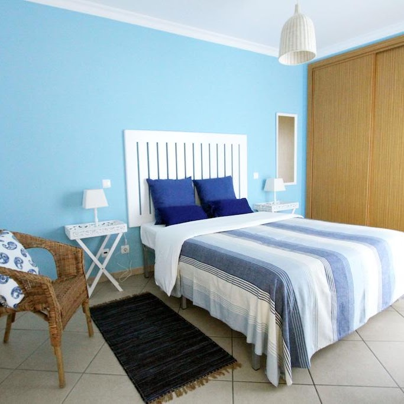
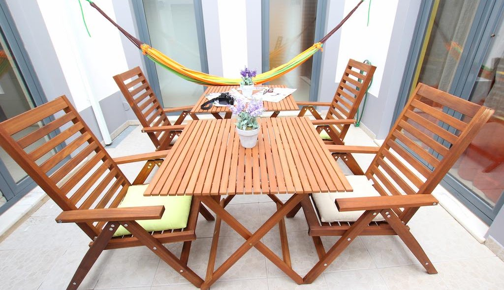
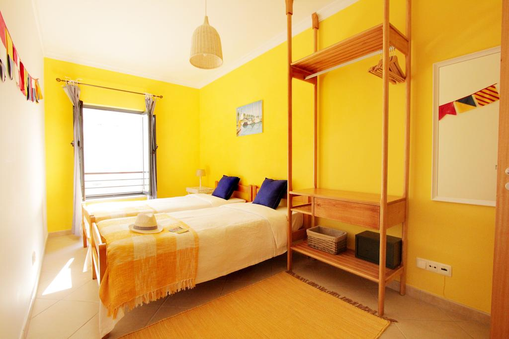
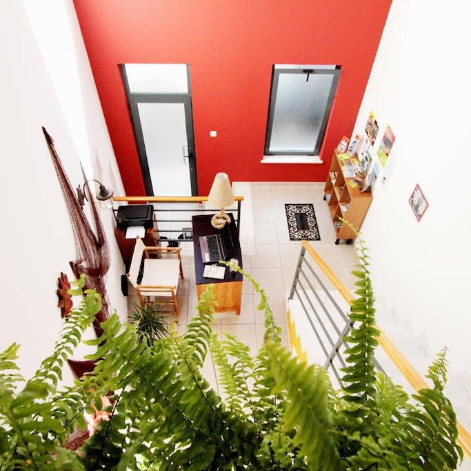
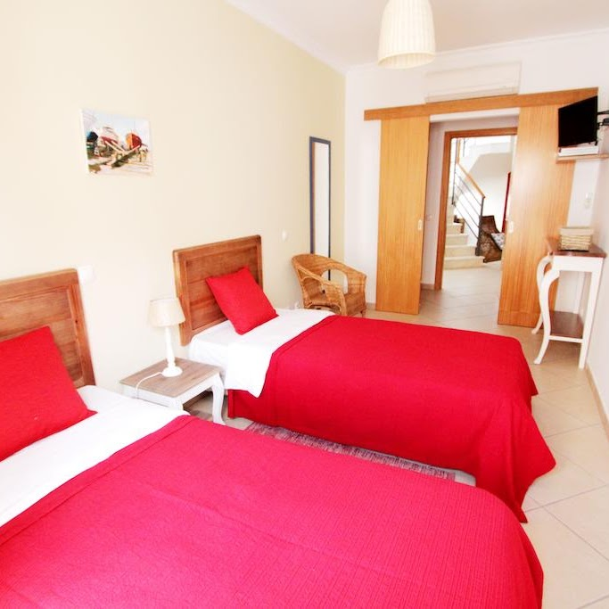
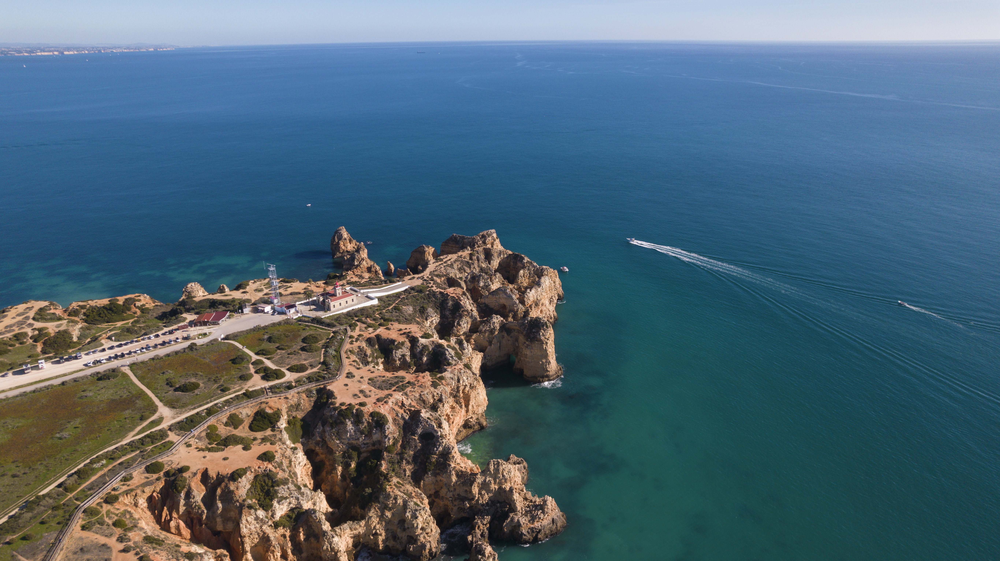

01
Quarto da Meia Praia
A room named for Lagos’ long Atlantic beach.

A five-room guesthouse shaped by Lagos, its old streets and the Atlantic that has always defined the city.
Casa a Sul describes itself through what connects Lagos to nature, livelihood and history: the ocean. Each room is decorated differently but shares that common thread, pairing brightness with a relaxed, personal guesthouse atmosphere.

The guesthouse’s rooms take their names from the city and coast. The concept below gives each one its own visual identity while keeping the house connected as a whole.

A room named for Lagos’ long Atlantic beach.

Coastal references carried into a bright, intimate stay.

A nod to the harbor and Lagos’ relationship with the sea.
Named for the people and livelihood shaped by the Atlantic.
A room grounded in the streets and character of Lagos itself.
Two equipped kitchens, a rooftop terrace, patio and reading/seating area give the house more than just bedrooms. They create room to pause between beach days and evenings in town.

Casa a Sul sits in Lagos’ historic centre, with restaurants, cultural sights and the coastline all forming part of the stay.
Rua da Atalaia 18
8600-686 Lagos, Portugal
Google Sites